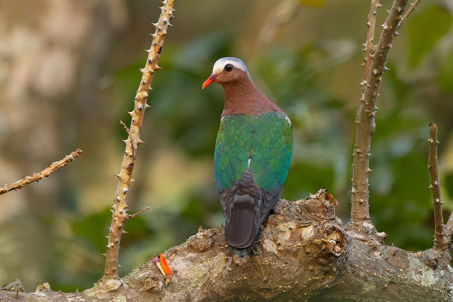

कॉमन एमराल्ड डवCommon Emerald Dove
Chalcophaps indica · Columbidae · BRD-0286

- Scientific name वैज्ञानिक नाम
- Chalcophaps indica (Linnaeus, 1758)
- Family कुल
- Columbidae
- Hindi हिंदी
- कॉमन एमराल्ड डव
- Local names स्थानीय नाम
- common emerald dove, kaman emerald dav, emerald dove
- Status here यहाँ की स्थिति
- native
- Movement आवागमन
- Resident, here all year
- Known from कहाँ दर्ज
- Others have published records from the Basti–Ayodhya districts बस्ती–अयोध्या के ज़िलों से दूसरों के प्रकाशित अभिलेख
- IUCN IUCN
- LC
- Review समीक्षा
- not yet reviewed
When to look कब देखें
Present all year. साल भर मौजूद।
Tell it apart from इनसे अलग पहचानें
कॉमन एमराल्ड डव / Common Emerald Dove
Chalcophaps indica (Linnaeus, 1758) — Columbidae
कॉमन एमराल्ड डव — अवध के घने और छायादार जंगलों, बांस के झुरमुटों और पुराने बागों में रहने वाली एक बेहद खूबसूरत कबूतर-प्रजाति, जिसकी पीठ चमकदार पन्ने जैसी हरी, छाती गुलाबी-कत्थई और माथा सफेद होता है और जो जमीन पर गिरे पके फल और बीज खाती है।
Quick Identification त्वरित पहचान
| Feature | Description |
|---|---|
| Wing & mantle | Brilliant iridescent metallic emerald-green wings and mantle with bronze sheen |
| Head & neck | Forehead and broad eyebrow white; blue-grey crown; deep vinous-red neck and breast |
| Shoulder mark | Conspicuous white patch on leading shoulder margin in adult males |
| Bill & legs | Bright coral-red to crimson bill; dull purplish-red legs and feet |
| Flight habits | Extremely fast, low bullet-like flight dodging deftly through dense forest trees |
Compact, plump ground dove instantly recognized by its luminous metallic emerald-green wings and back contrasting with a vinous-pink head and underbody. Males show a pure white forehead and shoulder edge, while females are duller with a brownish-grey forehead.
हिंदी: छोटे और गोल आकार की कबूतर जैसी फाख्ता जिसकी पीठ पन्ने जैसी चमकदार हरी और छाती गुलाबी-कत्थई होती है। नर के माथे और कंधे पर सफेद धब्बा होता है। यह जंगलों में पेड़ों के बीच बहुत तेज रफ्तार से नीचे-नीचे उड़ती है।
Morphology आकारिकी
| Measurement | Value | Source |
|---|---|---|
| Total length | About 250–270 mm | Baker (1928) as Chalcophaps indica |
| Wing | 148–161 mm | Baker (1928) as Chalcophaps indica |
| Tarsus | About 25 mm | Baker (1928) as Chalcophaps indica |
| Culmen | About 15–16 mm | Baker (1928) as Chalcophaps indica |
The male displays a pure white forehead and broad supercilia extending backward, fading into dark leaden-grey across the crown and nape. The sides of the head, neck, mantle, and breast are rich vinous-red, shading into paler vinaceous-pink on the abdomen. The upper back, scapulars, and wing-coverts are brilliant metallic emerald-green with golden-bronze reflections. The lower back carries two distinct greyish-white transverse bars bordered with copper-bronze. The tail is dark brown, with the outer feathers broadly tipped with grey. The bill is coral-red with a darker red base; the iris is dark hazel-brown, and the feet are dull purplish-red. Females are slightly smaller, possessing a grey-tinged forehead and duller bronze-brown reflections on the green mantle.
Vocalisations. A deep, soft, mournful low-pitched cooing rendered as hoon-hoon-hoon, repeated at measured intervals, carrying surprising distances through dense forest understorey.
हिंदी: इसका शरीर 250 से 270 मिमी लंबा होता है (Baker 1928 as Chalcophaps indica)। चोंच मूंगे जैसी लाल और पैर जामुनी-लाल होते हैं। पंखों पर हरी धातु जैसी चमक होती है जो धूप में बहुत सुंदर दिखती है।
Behaviour & Ecology व्यवहार और पारिस्थितिकी
A predominantly terrestrial forest dove that spends its days walking quietly on shaded leaf litter beneath closed forest canopy. When undisturbed, it struts purposefully along forest trails, cattle paths, and dry stream beds, picking up fallen seeds and small berries. If startled, it bursts from the ground with an audible whirr of wings, rocketing away in a remarkably swift, bullet-like flight just above the forest floor, threading deftly between tree trunks before vanishing into thick cover. It rarely perches high in the open, preferring secluded boughs concealed by foliage.
हिंदी: यह घने जंगलों की जमीन पर सूखी पत्तियों के बीच चुपचाप चलती है और गिरे हुए बीज चुगती है। खतरे की आहट पाते ही यह गोली की तरह तेज रफ्तार से उड़कर पेड़ों के पीछे छिप जाती है।
Life Cycle जीवन चक्र
Breeding occurs across several months from March to July, influenced by local pre-monsoon rains and fruit abundance. Males perform an upright courtship display on a low branch, bowing and cooing softly with the iridescent emerald mantle fully displayed. The nest is a neat, slightly cup-shaped platform of slender twigs and rootlets, noticeably more substantial than typical pigeon nests, placed on a horizontal fork of a low sapling, bamboo clump, or tangled bush. A clutch of two creamy-buff eggs is laid. Both parents share incubation duties and rear the chicks with regurgitated crop milk.
हिंदी: प्रजनन मार्च से जुलाई के बीच होता है। यह बांस के झुरमुट या छोटे पेड़ों की निचली डालियों पर टहनियों और जड़ों से एक छोटा कटोरी जैसा घोंसला बनाती है। मादा दो हल्के बादामी अंडे देती है जिनकी दोनों मिलकर देखभाल करते हैं।
Host Plants or Prey आहार
Strictly frugivorous and granivorous forager. It feeds almost entirely upon fallen berries, drupes, and hard seeds gathered from the ground under mature fruiting trees. Favoured wild fruits include small figs of Ficus benghalensis, Ficus religiosa, and Ficus hispida, wild jamun (Syzygium), and seeds of castor, bamboo, and various woodland Euphorbiaceae. Small grit particles and tiny terrestrial snails are ingested to assist mechanical gizzard digestion.
हिंदी: इसका मुख्य भोजन जमीन पर गिरे हुए फल और बीज हैं। यह बरगद, पीपल और गूलर के पके फल, जामुन और जंगली घासों के बीज खाती है। भोजन पचाने के लिए यह छोटे कंकड़ भी निगलती है।
Predators / Natural Enemies शत्रु
Terrestrial foraging makes it vulnerable to ground and aerial woodland carnivores. Ambush predators include the jungle cat, leopard cat, and small Indian civet stalking forest paths. Raptors such as the crested goshawk, shikra, and changeable hawk-eagle actively hunt it along shaded woodland glades.
हिंदी: जमीन पर दाना चुगने के कारण जंगली बिल्ली, गीदड़ और नेवले इसका शिकार करने की ताक में रहते हैं। जंगल के शिकारी बाज भी इस पर अचानक झपट्टा मारते हैं।
Agricultural / Human Relevance कृषि प्रासंगिकता
Protected under the Wildlife (Protection) Act 1972. It plays an important ecological role as an effective seed disperser for fleshy-fruited forest trees and shrubs across tropical moist forest formations. Historically captured for the illegal cage-bird trade due to its spectacular iridescent emerald plumage, it is now strictly protected.
हिंदी: वन्यजीव (संरक्षण) अधिनियम 1972 के तहत संरक्षित। यह जंगलों में बीजों को एक स्थान से दूसरे स्थान तक फैलाकर नए पेड़ उगाने में मदद करती है। इसके सुंदर हरे पंखों के कारण इसे पकड़ना या पालना गैरकानूनी है।
Expected Locally स्थानीय रूप से अपेक्षित
Not a field record. Written from published accounts for eastern Uttar Pradesh. No confirmed local sighting yet — if you have seen it, that is what the atlas needs.
अभी तक स्थानीय पुष्टि नहीं। यह विवरण प्रकाशित स्रोतों से है, किसी अवलोकन से नहीं।
GBIF holds published records from these districts. It is expected in dense, shaded mango topes, old riverine woodlands, and moist bamboo groves along the Kuwana and Ghaghara river tracts. A confirmed local record requires a clear photograph displaying the emerald-green back, coral bill, and white forehead markings alongside habitat coordinates.
हिंदी: यह कुआना और घाघरा नदी के किनारे घने और नम पुराने बागों में संभावित है। पुष्टि के लिए पन्ने जैसे हरे पंखों और लाल चोंच को दर्शाती तस्वीर आवश्यक है।
Distribution वितरण
Global range: Widespread across tropical South and Southeast Asia, extending from India and Sri Lanka east through southern China, Indochina, and Malaysia to Australia.
In India: Found throughout the Western Ghats, Eastern Ghats, northeast India, and the sub-Himalayan Terai belt.
In Uttar Pradesh: Recorded across forested sub-Himalayan tracts, moist sal forests, and undisturbed riparian groves in the eastern districts.
In Basti district / eastern UP: Expected as a scarce resident in dense, mature woodland groves and shaded riverine scrub.
हिंदी: यह भारत, श्रीलंका और दक्षिण-पूर्व एशिया से लेकर ऑस्ट्रेलिया तक पाई जाती है। उत्तर प्रदेश में यह तराई और पूर्वी जिलों के घने और नम जंगलों में मिलती है।
Research Questions शोध प्रश्न
- What are the key floristic and canopy cover thresholds dictating patch occupancy of Chalcophaps indica in rural orchard fragments?
- How does the removal of native Ficus trees from village groves influence dry-season emerald dove residency?
- What is the extent of seed destruction versus viable gut passage for ingested native tree drupes?
- How do feral cat populations in agrarian village interfaces affect ground-foraging dove mortality?
- क्या गांवों के पुराने आम और जामुन के बागों के कटने से कॉमन एमराल्ड डव के छिपने के स्थान समाप्त हो रहे हैं?
- क्या यह फाख्ता जंगल के विभिन्न पेड़ों के बीज फैलाकर नए जंगल उगाने में सहायक है?
Similar Species मिलती-जुलती प्रजातियाँ
| Species | How to tell apart | हिंदी | |
|---|---|---|---|
| Spotted Dove \ | Spilopelia chinensis | Brown plumage with white-spotted black chessboard neck patch; lacks green metallic sheen | चितकबरी फाख्ता के शरीर पर हरा रंग नहीं होता और उसकी गर्दन पर सफेद बिंदियों वाला काला धब्बा होता है |
| Red Collared Dove \ | Streptopelia tranquebarica | Smaller size; brick-red plumage in males; narrow black half-collar on rear neck; lacks emerald back | लाल फाख्ता ईंट जैसे लाल रंग की होती है और उसकी गर्दन पर काली पट्टी होती है; इसमें हरा रंग नहीं होता |
| Yellow-footed Green Pigeon \ | Treron phoenicopterus | Arboreal canopy feeder; yellowish-green body with lilac shoulder patch and bright yellow feet | हरियल पक्षी पेड़ों की ऊंची डालियों पर रहता है, उसका पूरा शरीर पीला-हरा और पैर चमकीले पीले होते हैं |
Field rule: Ground-dwelling dove with luminous metallic emerald-green wings, vinous-pink breast, and bright coral-red bill.
हिंदी: जमीन पर चलने वाली फाख्ता जिसकी पीठ पन्ने जैसी चमकदार हरी, छाती गुलाबी और चोंच चमकीली लाल होती है।
Taxonomy & Classification वर्गीकरण
Original description. Linnaeus (1758), Systema Naturae, 10th ed., vol. 1, p. 164; type locality: East Indies (restricted to Calcutta, India).
Subspecies. Polytypic species; the mainland Indian subcontinent is inhabited by the nominate race Chalcophaps indica indica.
Family and order placement. Belongs to the pigeon and dove family Columbidae, order Columbiformes, class Aves.
Phylogenetic notes. Forms a distinct Australasian and Oriental lineage of ground-foraging emerald doves characterized by metallic wing iridescence.
IUCN status rationale. Evaluated as Least Concern (LC) globally by IUCN (2024) due to its extremely vast geographical distribution.
हिंदी: इसका पहला वैज्ञानिक विवरण 1758 में लिनिअस ने दिया था। यह कोलंबिडे कुल का सदस्य है और वैश्विक स्तर पर कम चिंताजनक (Least Concern) श्रेणी में है।
Photo Gallery फोटो गैलरी
No photos yet — add field photos to media/species/common_emerald_dove/ and run node scripts/sync_photos.js.
Photos needed आवश्यक फोटो
- [ ] Adult male foraging on shaded forest ground showing brilliant emerald-green back (छायादार जमीन पर दाना चुगता वयस्क नर जिसकी हरी पीठ साफ दिखे)
- [ ] Close-up of head showing white forehead, blue-grey crown, and coral bill (सफेद माथे, सलेटी सिर और लाल चोंच का क्लोज-अप दृश्य)
- [ ] Female bird showing browner plumage and reduced shoulder patch (हल्के भूरे रंग और कम चमक वाली मादा का स्पष्ट दृश्य)
- [ ] Bird perched on a shaded horizontal branch in a bamboo thicket (बांस के झुरमुट में बैठी हुई फाख्ता का प्राकृतिक दृश्य)
- [ ] Neat twig nest platform in a low sapling showing two creamy eggs (छोटे पेड़ पर बना कटोरीनुमा घोंसला जिसमें दो अंडे दिखें)
- [ ] Typical moist deciduous woodland or mango grove understorey habitat (अवध के पुराने आम के बाग या घने जंगल का प्राकृतिक वास दृश्य)
References संदर्भ
- Original description: Linnaeus, 1758 — see GBIF.
- Baker, E. C. S. (1928). The Fauna of British India, Including Ceylon and Burma: Birds. 2nd ed., Vol. 5. Taylor & Francis, London. (as Chalcophaps indica).
- Ali, S. & Ripley, S. D. (1983). Handbook of the Birds of India and Pakistan. Compact ed. Oxford University Press, New Delhi.
- Grimmett, R., Inskipp, C. & Inskipp, T. (2011). Birds of the Indian Subcontinent. 2nd ed. Christopher Helm, London.
- Rasmussen, P. C. & Anderton, J. C. (2012). Birds of South Asia: The Ripley Guide. Vols. 1–2. 2nd ed. Smithsonian Institution and Lynx Edicions.
- IUCN Red List of Threatened Species: Chalcophaps indica, 2024.
- GBIF Occurrence Data — Chalcophaps indica, India (2025).
Source file: species/fauna/birds/common_emerald_dove.md